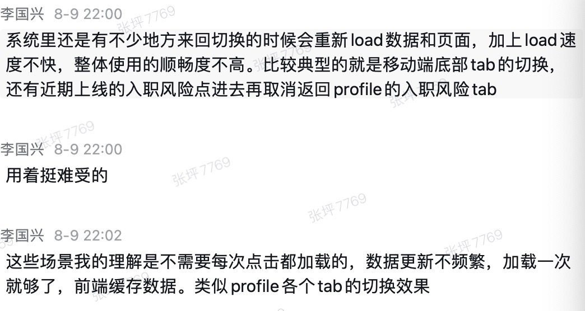
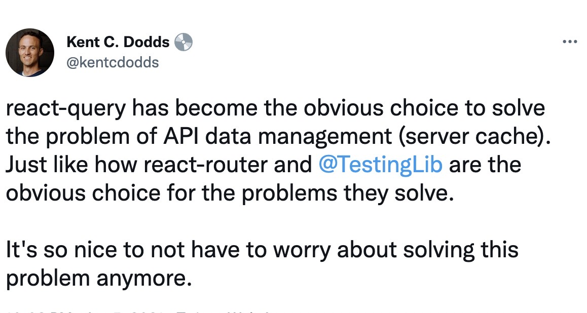

Shared by zhangping1@mokahr.com


为什么要有服务端状态管理？
First look at react query
Queries
import { useQuery } from '@tanstack/react-query'
function App() {
const result = useQuery(['todos'], fetchTodoList)
}
About query result properties
Demo
function Todos() {
const { isLoading, isError, data, error } =
useQuery(['todos'], fetchTodoList)
if (isLoading) {
return <span>Loading...</span>
}
if (isError) {
return <span>Error: {error.message}</span>
}
// We can assume by this point that `isSuccess === true`
return (
<ul>
{data.map(todo => (
<li> key={todo.id}>{todo.title}</li>
))}
</ul>
)
}
Query Keys
// an array with constants values
useQuery(['todos'], ...)
// Something else, whatever!
useQuery(['something', 'special'], ...)
// An individual todo
useQuery(['todo', 5], ...)
// An individual todo in a "preview" format
useQuery(['todo', 5, { preview: true }], ...)
// A list of todos that are "done"
useQuery(['todos', { type: 'done' }], ...)
Query Key 的hash是确定的
hashed deterministically!
以下的key是等价的
useQuery(['todos', { status, page }], ...)
useQuery(['todos', { page, status }], ...)
useQuery(['todos', { page, status, other: undefined }], ...)
Query Key中通常会包含变量来标识唯一的query
function Todos({ todoId }) {
const result = useQuery(['todos', todoId], () => fetchTodoById(todoId))
}
Query Key hash算法
/**
* Hashes the value into a stable hash.
*/
export function stableValueHash(value: any): string {
return JSON.stringify(value, (_, val) =>
isPlainObject(val)
? Object.keys(val)
.sort()
.reduce((result, key) => {
result[key] = val[key]
return result
}, {} as any)
: val
)
}
Manual Parallel Queries
function App () {
// The following queries will execute in parallel
const usersQuery = useQuery(['users'], fetchUsers)
const teamsQuery = useQuery(['teams'], fetchTeams)
const projectsQuery = useQuery(['projects'], fetchProjects)
...
}
Dynamic Parallel Queries
function App({ users }) {
const userQueries = useQueries({
queries: users.map(user => {
return {
queryKey: ['user', user.id],
queryFn: () => fetchUserById(user.id),
}
})
})
}
Dependent Queries
// Get the user
const { data: user } = useQuery(['user', email], getUserByEmail)
const userId = user?.id
// Then get the user's projects
const { status, fetchStatus, data: projects } = useQuery(
['projects', userId],
getProjectsByUser,
{
// The query will not execute until the userId exists
enabled: !!userId,
}
Lazy Queries
function Todos() {
const [filter, setFilter] = React.useState('')
const { data } = useQuery(
['todos', filter],
() => fetchTodos(filter),
{
// ⬇️ disabled as long as the filter is empty
enabled: !!filter
}
)
return (
<div>
// 🚀 applying the filter will enable and execute the query
<FiltersForm onApply={setFilter} />
{data && <TodosTable data={{data}} />}
</div>
)
}
Query Retries
import { useQuery } from '@tanstack/react-query'
// Make a specific query retry a certain number of times
const result = useQuery(['todos', 1], fetchTodoListPage, {
retry: 10, // Will retry failed requests 10 times before displaying an error
})
Pagination
const result = useQuery(['projects', page], fetchProjects)
Infinite Queries
A Demo in hcm-h5-umi
Demo
Placeholder Data
function Todos() {
const result = useQuery(['todos'], () => fetch('/todos'), {
placeholderData: placeholderTodos,
})
}
function Todo({ blogPostId }) {
const result = useQuery(['blogPost', blogPostId], () => fetch(`/blogPosts/${blogPostId}`), {
placeholderData: () => {
// Use the smaller/preview version of the blogPost from the 'blogPosts' query as the placeholder data for this blogPost query
return queryClient
.getQueryData(['blogPosts'])
?.find(d => d.id === blogPostId)
},
})
}
Mutations
function App() {
const mutation = useMutation(newTodo => {
return axios.post('/todos', newTodo)
})
return (
<div>
{mutation.isLoading ? (
'Adding todo...'
) : (
<>
{mutation.isError ? (
<div>An error occurred: {mutation.error.message}</div>
) : null}
{mutation.isSuccess ? <div>Todo added!</div> : null}
<button
onClick={() => {
mutation.mutate({ id: new Date(), title: 'Do Laundry' })
}}
>
Create Todo
</button>
</>
)}
</div>
)
}
Query Invalidation
// Invalidate every query in the cache
queryClient.invalidateQueries()
// Invalidate every query with a key that starts with `todos`
queryClient.invalidateQueries(['todos'])
Invalidation from Mutations
import { useMutation, useQueryClient } from '@tanstack/react-query'
const queryClient = useQueryClient()
// When this mutation succeeds, invalidate any queries with the `todos` or `reminders` query key
const mutation = useMutation(addTodo, {
onSuccess: () => {
queryClient.invalidateQueries(['todos'])
queryClient.invalidateQueries(['reminders'])
},
})
Updates from Mutation Responses
const queryClient = useQueryClient()
const mutation = useMutation(editTodo, {
onSuccess: data => {
queryClient.setQueryData(['todo', { id: 5 }], data)
}
})
mutation.mutate({
id: 5,
name: 'Do the laundry',
})
// The query below will be updated with the response from the
// successful mutation
const { status, data, error } = useQuery(['todo', { id: 5 }], fetchTodoById)
// custom hooks
const useMutateTodo = () => {
const queryClient = useQueryClient()
return useMutation(editTodo, {
// Notice the second argument is the variables object that the `mutate` function receives
onSuccess: (data, variables) => {
queryClient.setQueryData(['todo', { id: variables.id }], data)
},
})
}
Optimistic Updates (乐观更新)
const queryClient = useQueryClient()
useMutation(updateTodo, {
// When mutate is called:
onMutate: async newTodo => {
// Cancel any outgoing refetches (so they don't overwrite our optimistic update)
await queryClient.cancelQueries(['todos'])
// Snapshot the previous value
const previousTodos = queryClient.getQueryData(['todos'])
// Optimistically update to the new value
queryClient.setQueryData(['todos'], old => [...old, newTodo])
// Return a context object with the snapshotted value
return { previousTodos }
},
// If the mutation fails, use the context returned from onMutate to roll back
onError: (err, newTodo, context) => {
queryClient.setQueryData(['todos'], context.previousTodos)
},
// Always refetch after error or success:
onSettled: () => {
queryClient.invalidateQueries(['todos'])
},
})
Query Cancellation
Out of the box, "scroll restoration" for all queries (including paginated and infinite queries) Just Works™️ in React Query. The reason for this is that query results are cached and able to be retrieved synchronously when a query is rendered. As long as your queries are being cached long enough (the default time is 5 minutes) and have not been garbage collected, scroll restoration will work out of the box all the time.
Does React Query replace Redux, MobX?
如果将server相关的状态管理都从redux/mobx中去除掉，那么还剩下什么呢？可能是少数的client-only的全局状态